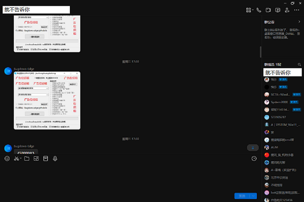

文章 · SystemBM5071の网站
这个网站是如何搭建起来的
首先！有一天（2023年7月27日），我无聊在看QQ的时候，发现了某个Up主交流群里的一个Up主发的自制程序图片（聊天内容如下，原图片在下方）：

我就想看看这位UP的个人网站，发现了ta的网站设计正合我意，于是就立刻复制了ta的网站源码，《稍微》改造了一下，便成了你看到的模样！
传送区：
回到首页
去网站源码作者的网站主页
本网站版权由SystemBM5071持有